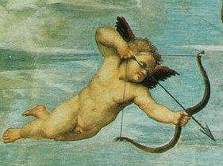

Tuesday, November the 2nd, 2004
back to: title, date or indexes
Cuppid is, as you might expect, related to Cupid, although there is a lot more than that extra P to help you distinguish between them. Cuppid is composed of both toxic and non-toxic gases, and tinkles a little golden bell whenever it alights upon the hairy back of a bison, which it often does, for Cuppid's favourite haunts are the vast plains of North America. I say it because Cuppid is, if not exactly a hermaphrodite, neither male nor female, although sometimes when its gases cool and take on liquid form it can bear a fugitive resemblance to Sonja Henie (1912-1969), the legendary Norwegian figure skating champion. Such moments can be dangerous for Cuppid, for it is volatile, and seeks warmer air urgently to return to its gaseous state.
Cuppid is invoked by farmers and by those who work with timber, for it brings them luck. Conversely, wrestlers and plutocrats live in fear of a visitation by Cuppid, and tremble at its approach. You can be sure that if you see a trembling plutocrat, Cuppid is not far away.
Some say Cuppid can be trapped in an envelope or small carton and used for both good and ill. The common feature of such tales is that not one of them has ever been verified.
Toy plastic Cuppids, coated with a special varnish to ape the appearance of gas, have recently become popular as gifts for children in Dawlish, Oswestry and Uttoxeter. This geographical exclusivity is due to factors unique to Cuppid, including the risk of suffocation, impending thirst, and three or four empty metal pails lined up in a row on the site of a long ago mudslide.
Cuppid rotates.

Left : Cupid. Right : Sonja Henie, or possibly Cuppid at low temperature.
Hooting Yard on the Air, November the 3rd, 2004 : “Tex-mex Jiffy Bag Sprites” (starts around 25:19)
Hooting Yard on the Air, May the 4th, 2005 : “Mr Bewg's Reference” (starts around 25:24)